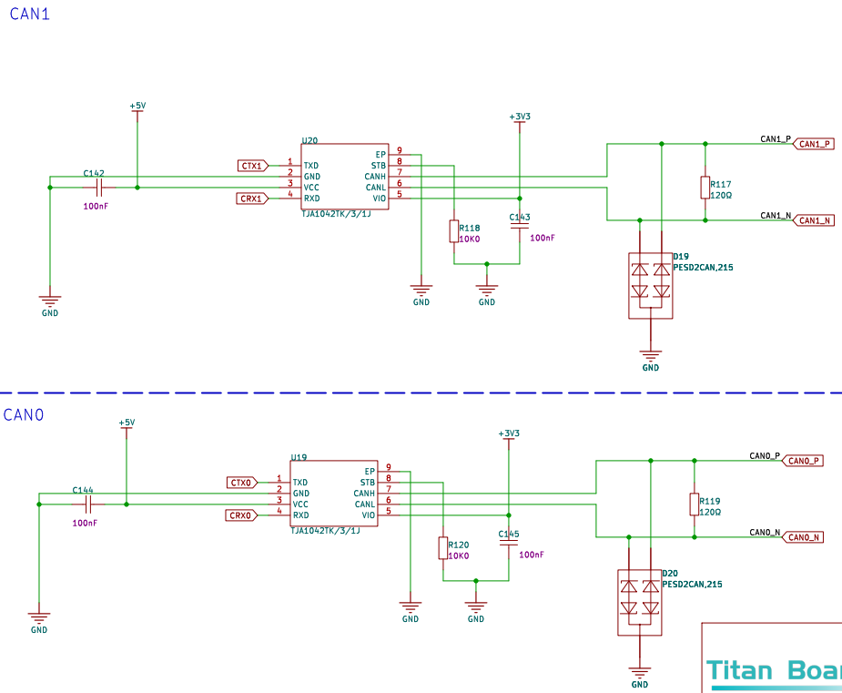

CANFD 应用示例说明
中文 | English
简介
本示例展示了如何在 Titan Board 上使用 CANFD（CAN with Flexible Data Rate）接口，结合 RT-Thread CAN 驱动框架进行高速车载或工业通信。
主要功能包括：
初始化 CANFD 硬件接口
配置波特率、数据帧和时序参数
发送和接收标准帧/扩展帧
使用 RT-Thread CAN API 实现设备统一管理
支持中断、FIFO、DMA 高速数据传输
CAN 与 CAN FD 协议详解
1. CAN 协议概述
CAN（Controller Area Network） 是一种多主机串行通信协议，由 Bosch 在 1980 年代为汽车电子设计。其主要特点是高可靠性、实时性强，适用于汽车、工业自动化、智能设备等领域。
数据传输方式：基于差分信号的总线通信，使用 CAN_H 和 CAN_L 两根线。
通信模式：多主机，支持 非破坏性总线仲裁，即优先级高的报文可以先发送。
物理层标准：ISO 11898-2（高速 CAN）、ISO 11898-3（低速容错 CAN）。
2. CAN 协议帧格式
CAN 的数据传输以 帧（Frame） 为单位，主要分为以下几种帧类型：
数据帧（Data Frame）：传输数据
远程帧（Remote Frame）：请求数据
错误帧（Error Frame）：用于报告总线错误
过载帧（Overload Frame）：用于间隔时间控制
2.1 标准帧（CAN 2.0A）
帧标识符（ID）：11 位
数据长度（DLC）：0~8 字节
帧结构：
字段 |
长度 |
描述 |
|---|---|---|
SOF |
1 bit |
帧起始位 |
ID |
11 bit |
报文标识符 |
RTR |
1 bit |
数据帧/远程帧标志 |
IDE |
1 bit |
标准/扩展帧标志 |
r0 |
1 bit |
保留位 |
DLC |
4 bit |
数据长度码 |
Data |
0~8 bytes |
数据域 |
CRC |
15 bit + 1 bit |
CRC 校验 |
ACK |
2 bit |
应答位 |
EOF |
7 bit |
帧结束 |
2.2 扩展帧（CAN 2.0B）
帧标识符（ID）：29 位
其它字段与标准帧类似，只是 ID 扩展了 18 位。
3. CAN 协议特性
非破坏性总线仲裁
利用 ID 的优先级，ID 越小优先级越高。
总线冲突时，低优先级报文自动停止发送，不影响高优先级报文。
差分信号传输
CAN_H - CAN_L 差分传输，抗干扰能力强。
速度与长度
最高 1 Mbps（高速 CAN），传输距离与速率相关：
1 Mbps → 最大 40 m
500 kbps → 最大 100 m
125 kbps → 最大 500 m
错误检测与容错
CRC 校验
位填充（Bit Stuffing）
ACK 检查
错误计数器管理，节点可自动离线
4. CAN FD 协议概述
CAN FD（Flexible Data-rate） 是 Bosch 在 2012 年推出的 CAN 协议扩展标准（ISO 11898-1:2015），解决传统 CAN 带宽不足和数据长度受限问题。
主要改进：
数据长度扩展：从 8 字节提升到 64 字节
可变数据速率：仲裁段保持原速率，数据段可以提高速率（通常 2~8 倍）
5. CAN FD 帧格式
5.1 CAN FD 数据帧结构
字段 |
描述 |
|---|---|
SOF |
帧起始位 |
ID |
11/29 位标识符 |
RTR |
数据帧标志（远程帧不再使用） |
IDE |
扩展帧标志 |
FDF |
CAN FD 数据帧标志 |
BRS |
位速率切换（Bit Rate Switch）标志 |
ESI |
错误状态指示 |
DLC |
数据长度码（0~64 字节） |
Data |
数据字段（0~64 字节） |
CRC |
CRC 校验（17/21 bit） |
ACK |
应答位 |
EOF |
帧结束位 |
BRS = 1：数据段以更高速率传输
ESI = 1：发送节点处于错误被动状态
6. CAN FD 特性
更大数据长度：最大 64 字节/帧
更高数据速率：数据段可提高至传统 CAN 速率的 2~8 倍
兼容性：CAN FD 节点可以与传统 CAN 节点共存，但 FD 功能需硬件支持
错误处理增强：保持 CAN 错误机制，同时增加 CRC 位数以适应更长数据
7. CAN 与 CAN FD 对比
特性 |
CAN |
CAN FD |
|---|---|---|
最大数据长度 |
8 字节 |
64 字节 |
数据速率 |
最高 1 Mbps |
仲裁段 1 Mbps，数据段可 2~8 Mbps |
帧格式 |
标准/扩展 |
标准/扩展，增加 FDF/BRS/ESI |
兼容性 |
所有节点均支持 |
与传统 CAN 向下兼容，需要 FD 节点支持 |
CRC 校验 |
15-bit |
17/21-bit |
使用场景 |
车辆 ECU、工业控制 |
高速数据采集、摄像头、ADAS 系统 |
RA8 系列 CANFD 特性
RA8 系列 MCU 集成高性能 CANFD 控制器，支持 ISO CAN 2.0A/B 及 CANFD 协议，具备高速通信、灵活帧长度和硬件 FIFO 功能。
1. 基本参数
协议支持
ISO CAN 2.0A/B（经典 CAN）
CAN FD（Flexible Data Rate）
支持标准帧（11 位 ID）和扩展帧（29 位 ID）
数据帧长度
CAN：0–8 字节
CAN FD：0–64 字节
通信速率
CAN：最高 1 Mbps
CAN FD：数据段最高可达 8 Mbps（取决 MCU 时钟和 PHY）
硬件 FIFO
RX/TX 独立 FIFO
支持多帧缓冲，提高数据吞吐量
FIFO 触发中断，可结合 RT-Thread ISR 处理
2. 硬件特性
控制器架构
包含独立 RX/TX FIFO
硬件滤波器（标准 ID / 扩展 ID / 组合滤波）
自动重发、错误检测和总线状态监控
时序与波特率
支持独立 同步段、时间段 1/2、采样点 配置
支持 CAN FD 异步波特率（数据段波特率可不同于仲裁段）
提供自动比特率计算工具
中断机制
传输完成中断（TX）
接收帧中断（RX FIFO）
错误警告/被动中断
总线离线/恢复中断
DMA 支持
可与 MCU DMAC 协作，实现高速数据传输
TX/RX FIFO 自动写入/读取内存
减少 CPU 占用
错误处理与总线监控
错误计数器（TEC / REC）
总线状态机（Error Active / Error Passive / Bus Off）
自动恢复机制
3. 帧格式
经典 CAN 帧
标准帧：11 位 ID，0–8 字节数据
扩展帧：29 位 ID，0–8 字节数据
CAN FD 帧
支持 0–64 字节数据长度
支持快速数据段（Higher Data Rate）
帧结构增加 BRS（Bit Rate Switch） 位用于数据段加速
帧标记与控制位
RTR（Remote Transmission Request）
IDE（Identifier Extension）
FDF（CAN FD Frame）
ESI（Error State Indicator）
4. 应用场景
汽车 ECU 通信
工业控制网络（如 CANopen、J1939）
实时传感器数据采集
高速数据日志记录和分布式控制
硬件说明

FSP配置
新建两个 r_canfdlite Stack：

配置 CANFD0 stack：

配置 CANFD0 引脚：
配置 CANFD1 stack：
配置 CANFD1 引脚：

RT-Thread Settings 配置
使能 CANFD0 和 CANFD1：
工程示例说明
工程通过 canfd0 发送报文 canfd1 接收报文并将其使用串口打印。
发送代码示例：
static void can_tx_thread(void *parameter)
{
struct rt_can_msg msg = {0};
rt_size_t size;
msg.id = 0x78; /* ID 为 0x78 */
msg.ide = RT_CAN_STDID; /* 标准格式 */
msg.rtr = RT_CAN_DTR; /* 数据帧 */
msg.len = 8; /* 数据长度为 8 */
/* 待发送的 8 字节数据 */
rt_memset(msg.data,0,sizeof(msg.data));
while(1)
{
/* 发送一帧 CAN 数据 */
for(int i = 0; i < 8; i++)
{
msg.data[i] = i;
}
size = rt_device_write(can0_dev, 0, &msg, sizeof(msg));
if (size == 0)
{
rt_kprintf("can dev write data failed!\n");
}
rt_thread_delay(1000);
}
}
int can_send(int argc, char *argv[])
{
rt_err_t res;
rt_thread_t thread;
char can_name[RT_NAME_MAX];
if (argc == 2)
{
rt_strncpy(can_name, argv[1], RT_NAME_MAX);
}
else
{
rt_strncpy(can_name, CAN0_DEV_NAME, RT_NAME_MAX);
}
/* 查找 CAN 设备 */
can0_dev = rt_device_find(can_name);
if (!can0_dev)
{
rt_kprintf("find %s failed!\n", can_name);
return RT_ERROR;
}
/* 以中断接收及发送方式打开 CAN 设备 */
res = rt_device_open(can0_dev, RT_DEVICE_FLAG_INT_TX | RT_DEVICE_FLAG_INT_RX);
RT_ASSERT(res == RT_EOK);
/* 创建数据接收线程 */
thread = rt_thread_create("can0_tx", can_tx_thread, RT_NULL, 1024, 25, 10);
if (thread != RT_NULL)
{
rt_thread_startup(thread);
}
else
{
rt_kprintf("create can_rx thread failed!\n");
}
return res;
}
/* 导出到 msh 命令列表中 */
MSH_CMD_EXPORT(can_send, can device sample);
接收代码示例;
/* 接收数据回调函数 */
static rt_err_t can_rx_call(rt_device_t dev, rt_size_t size)
{
/* CAN 接收到数据后产生中断，调用此回调函数，然后发送接收信号量 */
rt_sem_release(&rx_sem);
return RT_EOK;
}
static void can_rx_thread(void *parameter)
{
struct rt_can_msg rxmsg = {0};
/* 设置接收回调函数 */
rt_device_set_rx_indicate(can1_dev, can_rx_call);
while (1)
{
/* hdr 值为 - 1，表示直接从 uselist 链表读取数据 */
rxmsg.hdr_index = -1;
/* 阻塞等待接收信号量 */
rt_sem_take(&rx_sem, RT_WAITING_FOREVER);
/* 从 CAN 读取一帧数据 */
rt_device_read(can1_dev, 0, &rxmsg, sizeof(rxmsg));
/* 打印数据 ID 及内容 */
rt_kprintf("ID:%x\tmessege:", rxmsg.id);
for(int i = 0; i < 8; i++)
{
rt_kprintf("%d", rxmsg.data[i]);
}
rt_kprintf("\n");
}
}
int can_receive(int argc, char *argv[])
{
rt_err_t res;
rt_thread_t thread;
char can_name[RT_NAME_MAX];
if (argc == 2)
{
rt_strncpy(can_name, argv[1], RT_NAME_MAX);
}
else
{
rt_strncpy(can_name, CAN1_DEV_NAME, RT_NAME_MAX);
}
/* 查找 CAN 设备 */
can1_dev = rt_device_find(can_name);
if (!can1_dev)
{
rt_kprintf("find %s failed!\n", can_name);
return RT_ERROR;
}
/* 初始化 CAN 接收信号量 */
rt_sem_init(&rx_sem, "rx_sem", 0, RT_IPC_FLAG_FIFO);
/* 以中断接收及发送方式打开 CAN 设备 */
res = rt_device_open(can1_dev, RT_DEVICE_FLAG_INT_TX | RT_DEVICE_FLAG_INT_RX);
RT_ASSERT(res == RT_EOK);
/* 创建数据接收线程 */
thread = rt_thread_create("can1_rx", can_rx_thread, RT_NULL, 1024, 25, 10);
if (thread != RT_NULL)
{
rt_thread_startup(thread);
}
else
{
rt_kprintf("create can_rx thread failed!\n");
}
return res;
}
/* 导出到 msh 命令列表中 */
MSH_CMD_EXPORT(can_receive, can device sample);
编译&下载
RT-Thread Studio：在 RT-Thread Studio 的包管理器中下载 Titan Board 资源包，然后创建新工程，执行编译。
编译完成后，将开发板的 USB-DBG 接口与 PC 机连接，然后将固件下载至开发板。
运行效果
将 CAN0 与 CAN1 对接，分别输入 can_send 和 can_receive 命令进行回环测试。